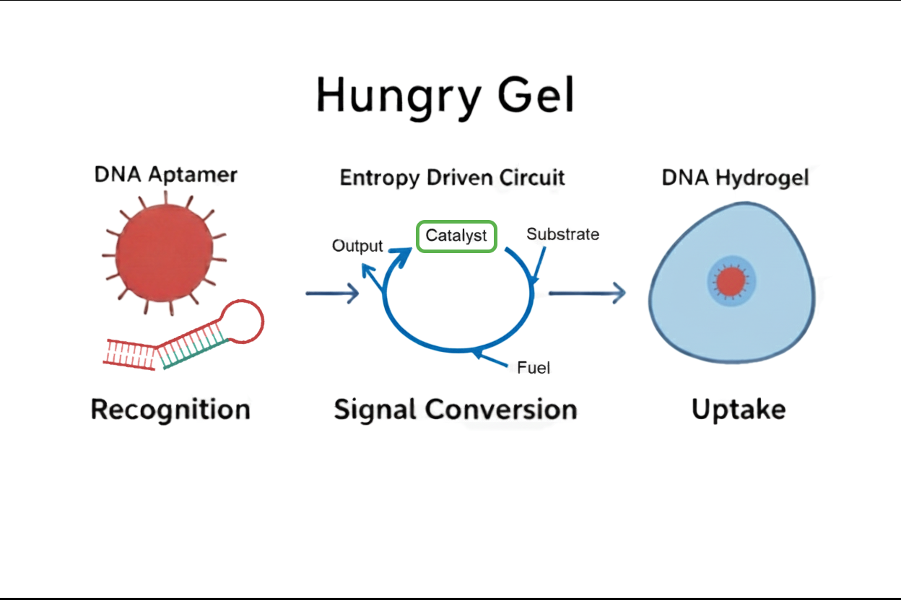
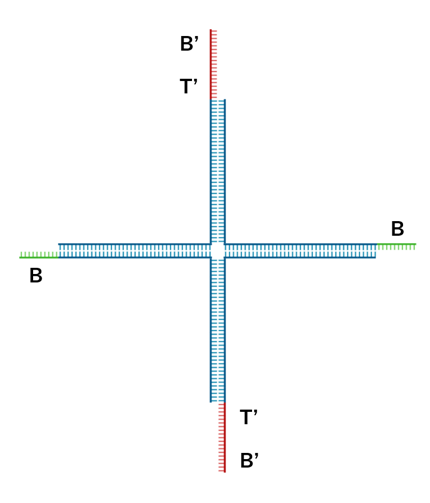

Overview of the design
もう少し簡潔に全体の流れが分かる図にしたい
私たちが考案したHungry Gelは、DNAハイドロゲル自体が標的を検出し、検出後にその周辺のローカルな位置でのみゲル溶解を引き起こすというシステムです。これを実現するために私たちは、DNAアプタマー、エントロピー駆動回路、DNAハイドロゲルという機能の異なる3つのDNAモジュールを結合してシステムを考案しました。 システムの一連の動作は、まずアプタマーが標的細菌を認識することから始まります。この認識が引き金となって増幅回路が起動し、ゲルの架橋構造を切断する一本鎖DNAが大量に放出されます。その結果、標的細菌のすぐ近くのゲルだけが選択的に溶解し、まるでマクロファージが異物を飲み込むかのように、細菌をゲル内部へと捕捉します。
DNA Aptamer
いったんめんどいから修正後回しにしてます

もっと見るだけで理解できるようなアプタマーの図を入れる(ないしはgif)
アプタマーは、特定の分子のみに強く結合する短いDNAまたはRNA配列である。さらに、アプタマーの配列を変更することで、標的となる細菌も変更できる。この実験では、アプタマーが標的細菌に反応し、新たなDNA配列を露出させるという役割を持つ。 具体的には、アプタマーはハイドロゲルに固定され、他の分子とは反応せず、標的の細菌が接近するのを待っています。そして、標的細菌がアプタマーに接近するとアプタマーは標的細菌にくっつき、構造が変化します。これによって、アプタマーは自身の折りたたまれた立体構造を解き、それまで内部に隠されていた新たなDNA配列が露出します。この露出した配列は、次のエントロピー駆動回路の触媒として機能します。
Entropy Driven Amplification Circuit

エントロピー駆動回路の役割は、アプタマーが生成する微弱な出力信号の濃度を、ハイドロゲル溶解に必要なレベルまで増幅することです。私たちは、Zhangらが提案した酵素を用いない増幅回路[1]をそのまま配列を変えずに採用します。 回路に用いられている配列はAppendixの項に記載しています。この回路は既に最適化された配列セットであるため、私たちはこの配列をそのまま使用し、後述するDNAハイドロゲルの配列をこの回路のOutput配列に合わせて設計した。
DNA Hydrogel
右側はGIFにしたい


本プロジェクトでは、数あるDNAハイドロゲルのモチーフの中で、Fig.xのような4分岐モチーフを採用した。各モチーフは4本のアーム(上下左右)を持ち、各アームの末端にはスティッキーエンドが配置されている。
スティッキーエンドは2種類の長さで設計されており、長いスティッキーエンドをドメインA(図中赤色、14塩基)、短いスティッキーエンドをドメインB(図中緑色、8塩基)と定義する。モチーフの上下のアームにはドメインA、左右のアームにはドメインBが配置されている。上下のドメインAは左右のドメインBと相補的な配列を持つため、隣り合うモチーフ同士が順次結合し、三次元的なネットワーク構造を形成する。
・配列設計
私たちはDNAハイドロゲルのモチーフを形成するDNA配列を設計しました。Kandatsuらの研究[2]を参考にして、低濃度でのゲル化を可能にするためにアーム長を34塩基に設定しました。
スティッキーエンドの設計については、モチーフ同士の結合に用いるドメインAを8塩基、Output DNAが結合するドメインBを14塩基とした。ドメインBがドメインAより長い理由は、Output DNAが結合する際のトーホールドを提供するためである。この突出した6塩基の領域がトーホールドとして機能し、Output DNAの結合開始点となる。
具体的な配列はAppendixに記載しています。
・形成メカニズム

Fig.xに示すように隣り合うモチーフはスティッキーエンドを介して結合し、大きなネットワーク構造を形成する。拡大図に示すように、あるモチーフのドメインAと隣接モチーフのドメインBが相補的結合を形成している。この時、ドメインAよりも長いドメインBの一部(トーホールド領域)は1本鎖で露出したまま、ゲルネットワークを形成する。
・溶解メカニズム

ドメインBのトーホールド領域に、エントロピー駆動回路から生成されたOutput DNAが結合する。Output DNAはトーホールドを足掛かりとして鎖置換反応を開始し、ドメインAを押し出す。
Output DNAとドメインBの完全相補的な結合の方が、ドメインAとドメインBの部分的な結合よりも熱力学的に安定であるため、この置換反応が進行する。この微視的な結合破壊が無数に起こることで、ゲルネットワーク全体が崩壊し、ハイドロゲルが溶解する。
System Integration
ここはまだ変更できてない
Hungry Gelシステムは、3つのDNAモジュールを分子レベルで統合することで実現されています。アプタマーが標的細菌と結合した際の構造変化により露出するDNA配列が、そのままエントロピー駆動回路のカタリスト配列として機能するよう設計しました。これにより、標的検出が直接的に信号増幅回路を活性化する仕組みを構築しています。今回の実験では、このカタリスト配列を外部から添加することで回路の動作を検証しました。
システムの核心となるのは、エントロピー駆動回路の出力配列とDNAハイドロゲルの架橋構造との相互作用設計です。短いスティッキーエンドの長さを出力配列よりも短く設計することで、ハイブリダイゼーションによる鎖置換反応が効率的に進行します。この設計により、熱力学的により安定な結合が形成される際に元の架橋結合が自発的に切断され、局所的なゲル溶解が引き起こされます。
標的細菌近傍でのみゲルが溶解する機能の実現においては、アプタマーの構造変化が標的細菌近傍でのみ起こることを利用しています。この局所的な構造変化により、回路活性化からゲル溶解まで一連の反応が空間的に制限され、マクロファージの選択的貪食作用を模倣した機能が実現されます。
システム全体の安定性確保のため、NUPACKソフトウェアを用いてDNAハイドロゲルの全配列を設計し、エントロピー駆動回路とハイドロゲル配列間での非特異的相互作用を回避することで、設計通りの特異的な動作を保証しています。
Reference
[1]David Yu Zhang, Andrew J. Turberfield, Bernard Yurke, and Erik Winfree(2007)”Engineering Entropy-Driven Reactions and Networks Catalyzed by DNA”.Science,318,pp.1121-1125
[2]Daisuke Kandatsu et al.(2016)”Reversible Gel-Sol Transition of a Photo-Responsive DNA Gel”.ChemBioChem,17.pp.1118-1121
Appendix
Sequence List
・DNA sequence used as a motif
| No. | Sequence (5'→3') |
|---|---|
| 1 | AAGTTTTGACCTTAGGGTTCCCCTTACGCATCTTCGCGGGTAGCTAAATTAAGATTGCTAGCGAGGCCGACGAAGGTGTAGG |
| 2 | GGCCTCGCTAGCAATCTTAATTTAGCTACCCGCGACATCAAGCCACGGCGCTGAGAAAGATGGAACAACCTACACC |
| 3 | TTGTTCCATCTTTCTCAGCGCCGTGGCTTGATGTCCTGATCTCTTTAAACGGAAGCTTTGACGAAACGGACGAAGGTGTAGG |
| 4 | CGTTTCGTCAAAGCTTCCGTTTAAAGAGATCAGGAAGATGCGTAAGGGGAACCCTAAGGTCAAAACTTCCTACACC |
・Entropy driven amplification circuit
| Name (see entropy driven circuit diagram) | Sequence (5'→3') |
|---|---|
| Catalyst | CATTCAATACCCTACGTCTCCA |
| Signal | CCACATACATCATATTCCCTCATTCAATACCCTACG |
| Fuel | CCTACGTCTCCAACTAACTTACGGCCCTCATTCAATACCCTACG |
| output | CTTTCCTACACCTACGTCTCCAACTAACTTACGG |